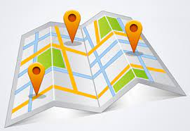
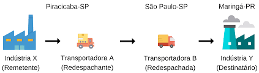
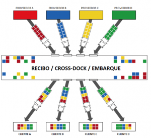
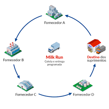
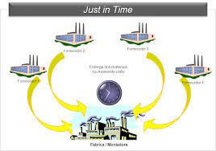
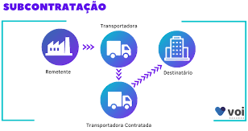
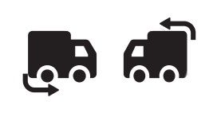

|

Ponto a ponto |
Quando uma empresa precisa transportar materiais para suas filiais ou distribuidoras, é preciso contratar uma empresa de transporte que faça o transporte ponto a ponto. A empresa de transporte chega na sede do cliente, faz o carregamento da carga e, então, vai até filial, franquia ou distribuidora para fazer a entrega. |
|

Redespacho |
Geralmente o redespacho acontece na logística de distribuição, sendo responsabilidade de um embarcador e uma transportadora. O redespacho pode ser uma maneira estratégica para realizar o transporte de cargas, reduzindo custos estreitando relações com parceiros e agilizando as entregas. Operações de redespacho são uma prática muito comum em países como o nosso, de proporções continentais, acontece quando um embarcador necessita realizar uma entrega para seu cliente e envolve mais de uma transportadora nesse processo, pois o destino final não está na sua região de atendimento. Uma transportadora contrata outra transportadora para efetuar parte da prestação de serviço. |
|

Cross Docking |
Cross Docking é o nome dado a um tipo de sistema de distribuição que funciona assim: quando alguém compra determinado produto no seu site, ele é enviado a um centro de distribuição ou armazém que, por meio de um sistema organizado de redistribuição, o envia para o cliente. Essa estratégia permite que você fique mais ágil para entregar o produto ao seu cliente e não precisa gastar com espaço físico de estoque. A contrapartida é que você vai precisa sincronizar ações muito cuidadosamente e assegurar que o produto chegará ileso e no prazo ao consumidor. Assim, o centro de distribuição se transforma em uma etapa crucial do sucesso da sua empresa. Na tradução literal, Cross Docking significa “Cruzando as docas”. O termo surgiu para explicar um sistema em que as mercadorias descarregadas pelos navios nos galpões eram transportadas por meio de esteiras automatizadas para caminhões já organizados por região. |
|

Milk Run |
O Sistema Milk Run nasce dessa necessidade por inovação, sendo um método de aceleração de fluxo de materiais no ciclo produtivo que busca a integração entre logística e gestão da cadeia de suprimentos. Milk Run significa, literalmente, corrida do leite. O método consiste em um transportador coletar em duas ou mais fazendas sem cruzar caminho na rota: retira o leite, e em seguida entrega-o em uma empresa. Esse sistema era adotado pelos produtores de leite nos EUA e atualmente vem sendo muito usado na indústria automobilística. |
|

Just in Time |
O Just in Time, que significa “momento certo”, é um sistema com objetivo de produzir a quantidade exata de um produto, de acordo com a demanda, de forma rápida e sem a necessidade da formação de estoques, fazendo com que o produto chegue a seu destino no tempo certo. O Just in Time tem um grande impacto em uma cadeia produtiva, de forma a alocar apenas a matéria-prima na quantidade certa para determinado produto em um determinado tempo. Esse sistema se aplica em produções por demanda, para evitar desperdícios, estoques desnecessários e custos extras. |
|

Subcontratação |
A subcontratação de frete acontece quando uma transportadora “terceiriza o transporte”, ou seja, quando ela é contratada para realizar o serviço, mas resolve não utilizar recursos próprios e contrata uma outra transportadora para isso. |
|

Reentrega |
Entregar novamente ou entregar-se mais uma vez: reentregar a encomenda devolvida; reentregaram-me os produtos ontem à noite. Etimologia (origem da palavra reentregar). Re + entregar. |